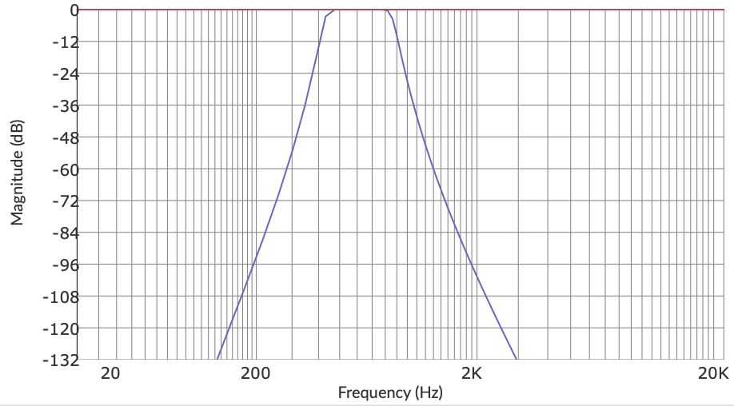
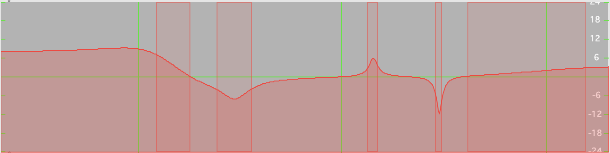
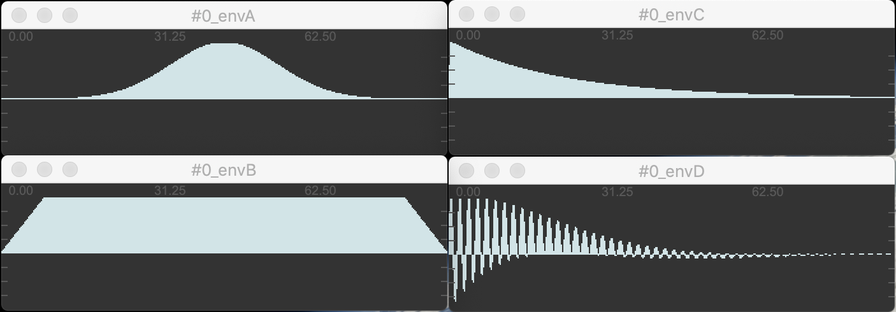

module name=myfavoritemodule ....descr: define yout own name for this module to be able to address it later.
you can send parameters directly with send scenename.chainname.myfavoritemodule
You can then send specific module parameter values as CUE messages:
scene1.clar-chain1.greatfilter freq 234.
scene1.clar-chain1.greatfilter freq line(min=100 max=200 time=10000)
Here scene1 is the scene name, clar-chain1 is the chain name and greatfilter is my controlled filter module.
audio in from specific adc.
in adc=[1 2] # input ClarYou can specify up to 4 adc channel number.
Valid messages are:
in adc=[1]
in adc=[5 6 7 8]
in adc=[3 4] gain=12.
audio out to specific dac. vca features to control volumes of multiples chains.
out vca=1 dac=[1 2 3 4]dac= define dac channel to send audio to
vca= vca channel bind to this output
gain= db gain
send audio on a named bus ( like a send~ ). The audio can be fetched in another module with receivebus with the same name. It also passes the module input to its output unchanged.
Bus has 4 channels.
sendbus bus=myintermediatesignalreceives audio from a named bus ( like a receive~ ) from another module.
receivebus bus=myintermediatesignalvariable delay of audio signal. time can be modulated (makes kind of simple granular mashup). feedback (0. 100.) reinject outputs into input.
delay time=rand(freq=5 varifreq=2 min=0 max=5000 curve=1)
time= delay time in ms
feedback= cross feedback in % of the delay line
drywet= crossfade in % between dry and wet signal
gain= gain in dB
variable delay of audio signal. time can be modulated (makes kind of simple granular mashup). feedback (0. 100.) reinject outputs into input.
delay time=rand(freq=5 varifreq=2 min=0 max=5000 curve=1)
time= delay time in ms
feedback= cross feedback in % of the delay line
drywet= crossfade in % between dry and wet signal
gain= gain in dB
bunch of 12 delays with random distribution between time and time + timeframe. timecurve sets the time distribution in the time frame. ampdecay set the amp distribution of the delay taps.
multidelay drywet=50 feedback=50 time=100 timeframe=1000 ampdecay=0 seed=CBA
ingain= gain in dB of the input signal feeding the delay.
time= first delay time in ms
timeframe= duration between first and last delay tap
timecurve= time distribution of the random delay taps. 0 means equally distributed delays. 1.5 means delays are generally closer to start time than to end time.
ampdecay= amp distribution (if you want the delay amp to decay)
feedback= cross feedback in % of the delay line
seed= 3 letters to seed the random generator. ex: ABC, ADA, ZOU. A the delay random distribution will always be the same when you specify a specific seed. The default is no seed, means it will be always different.
drywet= crossfade in % between dry and wet signal
gain= gain in dB
Multimode butterworth filter. Can be Lowpass, Highpass, Bandpass, Bandnotch. Filter can be very selective as it has a very sharp slope (around -36db/oct) and has a flat response in the selected frequency range (no resonance).
filter freq=660 mode=2 width=12 # bandpass (mode 2)

freq= central frequency of the filter
mode= mode of filter 0:lowpass 1:highpass 2:bandpass 3:bandstop
width= bandwidth for bandpass and bandstop mode in semitones
gain= gain in dB
Low-Shelf, High-Shelf and 3 Peak/Notch Equalizer module.
eq lf=150 lg=8. p1f=300. p1g=-6. p2f=1430. p2g=6 p2q=8. p3f=3000 p3g=-12. p3q=12. hf=8000 hg=3. hq=0.7

p3f= Peak 3 frequency
lg= hg= p1g= p2g= p3g= Gain for each bands
lq= hq= p1q= p2q= p3q= Q factor for each bands
gain= gain in dB
Cubic nonlinearity distortion. ( Faust version )
warning : can be loud and tricky in live situation.
disto drive=0.3 offset=0.01 drywet=50
drive= drive amount
offset= constant added before nonlinearity to give even harmonics.
drywet= crossfade between dry and wet signal
gain= gain in dB
frequency shifter of audio signal.
freqshift shift=randi(freq=0.1 min=-100 max=100 curve=0)
shift= shift amount in Hz
drywet= crossfade in % between dry and wet signal
gain= gain in dB
transpose audio signal with gizmo~ (fft scaling method).
gizmo ratio= 0.2
ratio= frequency multiplier
gain= gain in dB
pitch shifter of audio signal. uses pitchshift~.
special chord= feature to make a 4 layers of transposition. transp= can be modulated and is added to each layer transposition.
pitchshift transp=-1200.
pitchshift chord=[0 200 700 850] transp=0.spectral compressor to balance between sinusoidal part and noisy part of the input signal.
sinusnoise= parameter (0. 100.) balance the signal between noise (0) and sinus(100). 50 keeps the signal unchanged.
tilt= parameter (-6. 6.) tilts the threshold line to change the timbre of the output.
spectralcompand sinusnoise=0
spectralcompand sinusnoise=100
spectralcompand sinusnoise=lfo(min=25 max=75 freq=3)
spectralcompand sinusnoise=0 threshold=lfo(min=-60. max=-20. freq=0.2)
supervp transposer. pretty amount of sound tweaking between sinus and noise parts.
warning : adds latency (1024 pts ~= 20 ms).
Things to experiment:
envscale between 0. and 2. make timbre brighter or muffled.
sinus and noise set the gain (0. 1.) of the sinusoidal part and the noise part of the signal.
svptrans transp=-50. envscale=0.7 sinus=1. noise=0.5 error=0.2 gain=0transp= transposition factor in cents
transpadd= second transposition factor to add to transp (allows modulating for example)
envscale= frequency scaling of the spectral envelope. sets envscale.timbre and envscale.mean 0.5 : brighter sound 1.5 : muffled sound
envscale.timbre= timbre part of envscale
envscale.mean= mean part of envscale
sinus= sinusoidal gain for resynthesis. Use it ratio with noise
noise= noise gain for resynthesis. Use it ratio with sinus
error= threshold to descriminate between sinus and noise
tr= transient gain for resynthesis
tr.decay= decay time for detected transients
drywet= crossfade in % between dry and wet signal
gain= gain in dB
following are more advanced mode for experimental behaviours:
envpres= on: more subtle off: make some time noise sound like glouglou, harsher
stereopres= on: more subtle off: make some time noise sound like glouglou, harsher
envmode= on: lpc (more subtle) off: trueenv
lcporder= number of poles (filter peaks) in the spectral envelope
maxfreq= smooth the spectral envelope
shapeinv= waveform shape invariant on : more subtle off : make some time noise sound like glouglou, harsher
sinmode= sinusoidal resynthesis method 1 : additive (smoother) 0 : vocoder
supervp ring buffer transposer real time time stretcher.
It has the same parameters as svptrans so please refer to the svptrans documentation.
It adds several parameter to modulate the delay of the signal allowing to stretch-down incoming signal.
It has 2 modes set with scrubmode= (0/1):
0 : stretch mode : in this mode, stretch= and delaygo= parameters are active. stretch= sets the speed of the playhead (0 4.) and delaygo= allows you to jump to a specific playhead position (eg : delay )
1 : scrub mode : in this mode, only scrub= parameter is active and sets the playhead position directly (in ms). very interesting to modulate with continous modulators like lfo randi or line
svpring drywet=80 scrubmode=0 delaygo=0. stretch=0.7
svpring drywet=80 scrubmode=0 delaygo=10000. stretch=1.6
svpring drywet=80 scrubmode=1 scrub=line(min=0 max=10000 time=20000)
svpring drywet=80 scrubmode=1 scrub=randi(min=0 max=5000 freq=0.15)
scrubmode= mode of the playhead control
stretch= speed coefficient of the play head when scrubmode=0
delaygo= set the position of play head (eg delay) when scrubmode=0 . !!Cannot be modulated !!
scrub= set the position of play head (eg delay) when scrubmode=1
feedback= feedback in % of the stretcher line (experimental)
FDN reverb
reverb size=30 decay=40 damping=30 drywet=20
size= size of the room
decay= decay of the room
damping= damping of the room
diffusion= diffusion of the room
width= stereo width of the reverb
drywet= crossfade between dry and wet signal
gain= gain in dB
live granulation of audio signal.
density= sets the overlapping coeff of the grains. Default 8. is ~2 overlapping grains
detune-jit= in semitones randomize the transposition of each grains.
length= sets the length of each grains. longer make mashup effect. lesser makes timbre change. 80ms keeps the timbre content of the original sound.
granul density=8 length=20 delay=700 delay-mod-depth=500
length= length of each grains in milliseconds.
env-type= type of envelope 1: gauss 2: trapez 3: expodecay 4: modulated
density density of overlapping grains. below 8. value for rarefaction, upper 8 for densification.
density-jit= density randomization amount.
delay= delay time in ms of grain start. can act as a normal delay.
delay-mod-depth= delay modulation amount.
delay-mod-freq= frequency of the randomization of the delay time.
freeze= freeze the live sound recording feeding the granulator.
detune= transposition of the grain in semitones
detune-jit= amount of randomization of transposition in semitones
amp-jit= amount of randomization of the amplitude of the grains in dB
amp-pow= distribution of the values for the amplitude randomization
spat-jit= amount of randomization of the stereo/quadri placement of the grain
rev-snd= chance in % of sound reverse playing
rev-env= chance in % of env reverse playing
drywet= crossfade in % between dry and wet signal
gain= gain in dB
additive analysis synthesis of audio signal
# 2oct transpose with 2 partials of the original signal
additive npeak=2 freqtransp=-24 attack=5 decay=5 freqsmoo=5 hrm=0. randdev=20
# slowly decaying partial with no transpose and with richer partials (hrm=0.3)
additive npeak=4 attack=5 decay=1000 freqsmoo=5 hrm=0.3
# frequency smoothing (chewing gum effect)
additive npeak=4 attack=5 decay=200 freqsmoo=400
freqtransp= transpose all partials by a certain amount of semitones.
freqshift= shift all partials by a certain amount of Hz.
randdev= random shift choosed at each partial creation
attack= attack of amplitude enveloppe of each partials
decay= decay of amplitude enveloppe of each partials
hrm= crossfade between sinus (0.) <-> bl-square (1.) <-> noise (2.)
freqsmoo= smooth frequency change in a specific partial. Use it in conjonction with filterdev parameter.
npeak= Numbers of sinusoidal components selected for synthesis
trigtime= time between succesive analysis frame
freqmin= Minimum frequency of selected partials
freqmax= Maximum frequency of selected partials
filteramp= Minimum amplitude of selected partials
filtertilt= spectrum slope of the threshold for amp filtering.
filterdev= maximum amount of frequency deviation (in semitones) for the partial tracking.
drywet= crossfade between dry and wet signal
stereo= amount of (random) stereo distribution of partials
gain= db gain
sfplayer max 4 channels.
sfplayer open=48_P_P_A_TRAME_4A-2.wav loop=0 speed=1gain= gain for the player
speed= speed of the player
open= open a specific soundfile
play= play the sound file from the beginning
stop= stops the sound file
loop= loop soundfile